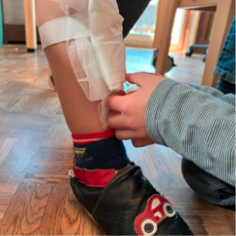

First Aid in the Rappelkiste
When my colleague Britta came up with the idea of doing a first aid project with our children, I was more than skeptical. Anyone who has ever taken a first aid course knows that these topics are not made for children.
So we reviewed the material and starting planning.
First aid, what is that?
- Rescue Chain
- Escape routes
- Associations
- Burns
- Hypothermia
- Poisoning
We discussed these topics with our children aged 4 and up. Every day after breakfast or after resting, we sat down with our children and worked out all the topics in a way that was child-friendly. Picture stories, role play and lots of practical exercises made our work easier. The children picked up the phone themselves, “dialed” the emergency number and spoke to an imaginary person at the other end of the line. We walked through our house together and discovered fire extinguishers and "escape route signs". We bandaged each other. In the kitchen we discovered that not all bottles and kitchen utensils are good for us or even taste good.
In summary, I can say that working on first aid with children is very doable and a lot of fun.
Übrigens, fällt der Satz „Kann ich helfen?“ jetzt viel öfter bei unseren Kindern, denn schon das macht uns zu einem Ersthelfer und das wollen unsere Kinder jetzt ganz sicher sein.
